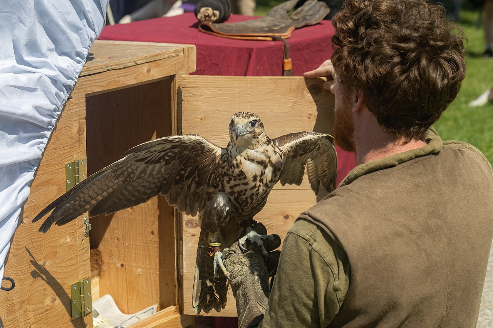

Resources → Reference
Mews Ventilation & Construction Standards
Your mews must pass a state inspection before you can obtain a falconry permit. Federal regulations set minimum standards for raptor housing, but many states impose additional requirements. This guide covers the ventilation calculations, materials, and design principles you need to build a compliant and comfortable mews.
Federal Minimum Requirements
The U.S. Fish & Wildlife Service establishes baseline mews standards under 50 CFR 21.29. These are the absolute minimums—exceeding them is always advisable for the welfare of your bird:
- Size: At least 64 square feet of floor area (e.g., 8′ × 8′) for one large raptor. The enclosure must be large enough that the bird can fully extend its wings without touching the walls.
- Height: Tall enough for the bird to bate from the perch without hitting the floor or ceiling. A minimum of 6 feet is typical, though 7–8 feet is preferred.
- Perch: At least one appropriate perch (bow perch for buteos, block perch for falcons) must be permanently installed inside the mews.
- Protection: The enclosure must protect the bird from extreme weather (heat, cold, wind, rain) and from predators including raccoons, cats, dogs, and owls.
- Ventilation: Adequate ventilation to maintain air quality without creating drafts that could stress the bird.
- Light: Access to natural light, either through a window (screened to prevent escape and predator entry) or a partially open weathering area.
- Security: A door with a secure latch that the bird cannot open and that prevents unauthorized access. Double-door entry systems (an airlock or vestibule) are strongly recommended to prevent escape.
Common State Additions
Many states go beyond the federal minimums. Common state-level additions include:
- Larger floor area: Some states require 80 or even 100 square feet for large buteos and eagles.
- Weathering yard: A fenced outdoor area adjacent to or near the mews where the bird can be tethered on a perch for sun exposure and bathing. Many states require this in addition to the indoor mews.
- Double-door entry: While federally recommended, some states make the airlock entry mandatory.
- Specific window requirements: Minimum window size, placement, or covering material (e.g., vertical-bar windows vs. hardware cloth).
- Bath pan: A water source for bathing must be available within the mews or weathering area.
- Predator-proof flooring: Some states require concrete slabs or buried hardware cloth to prevent digging predators.
Always check your specific state’s regulations before building. Contact your state wildlife agency to request a copy of the current facility requirements and, if possible, ask your inspector what they look for during the pre-permit inspection.
Ventilation Design & Calculations
Proper ventilation is critical. A poorly ventilated mews traps ammonia from mutes (droppings), builds up moisture that promotes mold and respiratory disease, and can overheat in summer. Conversely, too much open ventilation in winter creates dangerous drafts.
Basic Ventilation Principles
- Cross-ventilation: Place ventilation openings on at least two opposing walls so air can flow through the enclosure. High openings on one wall and low openings on the opposite wall create a natural convection current (warm air rises and exits high, cool air enters low).
- Total vent area: A common guideline is 1 square foot of ventilation opening per 10 square feet of floor area. For an 8′ × 8′ mews (64 sq ft floor), you need at least 6.4 square feet of total vent area, split between intake and exhaust.
- Adjustable vents: Install closable louvers or sliding panels so you can reduce ventilation in winter and increase it in summer. This gives you control over airflow without permanent modifications.
- Wind protection: Never place an open vent where prevailing winds blow directly onto the perch. Position the bird’s perch in a draft-free zone, away from direct airflow paths.
Ventilation Openings
All ventilation openings must be covered with hardware cloth (1/2-inch or smaller mesh) to prevent the bird from escaping and to block predators. Regular window screen is not strong enough—raccoons can tear through it in seconds.
For vertical bar windows (common in traditional mews design), bars should be spaced close enough that the bird cannot push its head through. For buteos, 1.5-inch spacing is typical; for small hawks and falcons, 1-inch or less.
Recommended Materials
| Component | Recommended Material | Notes |
|---|---|---|
| Framing | Pressure-treated 2×4 or 2×6 lumber | Pressure-treated wood resists rot. Use stainless or galvanized fasteners to prevent corrosion. |
| Walls (exterior) | T1-11 plywood siding, or 3/4″ exterior plywood with paint | Must be solid enough to exclude predators. Avoid thin panels that raccoons can claw through. |
| Walls (interior) | Smooth plywood or FRP (fiberglass reinforced panel) | Smooth surfaces are easier to clean and less likely to damage feathers if the bird bates against them. |
| Roof | Metal roofing panels or asphalt shingles over plywood sheathing | Ensure the roof is waterproof and slopes to shed rain. Overhang at least 6 inches to protect walls. |
| Floor | Concrete slab, gravel over landscape fabric, or pea gravel | Concrete is easiest to clean and prevents burrowing predators. Add AstroTurf mats or rubber mats around the perch for foot health. |
| Window/vent covering | 1/2″ galvanized hardware cloth | Staple securely to the frame and cover edges with trim to prevent injury. Double-layer for extra predator protection. |
| Door hardware | Raccoon-proof latches (spring-loaded or carabiner-style) | Raccoons can open simple slide latches and hook-and-eye closures. Use latches that require two motions to open. |
| Perch surface | AstroTurf, sisal rope, or cork wrap | Bare wood or metal causes bumblefoot. Replace perch wrapping when it becomes soiled or compressed. |
Insulation in Cold Climates
Raptors are well-adapted to cold weather, but extreme cold combined with wind and damp conditions can be dangerous. In northern states, insulating your mews helps maintain a stable environment:
- Wall insulation: Standard fiberglass batt insulation (R-13 or higher) between wall studs, covered with interior plywood or paneling so the bird cannot access the insulation material.
- Roof insulation: R-19 or higher in the roof/ceiling to reduce heat loss. Raptors are more susceptible to cold from above (rising body heat escaping through the roof) than from the sides.
- Floor insulation: A concrete slab provides thermal mass. If the mews is elevated (on piers or blocks), insulate the floor with rigid foam board beneath the subfloor.
- Reduce ventilation in winter: Use adjustable louvers to minimize airflow during extreme cold while still maintaining adequate air exchange. A rule of thumb is to reduce vent area by 50–70% in winter, but never seal the mews completely.
- Avoid supplemental heat. Space heaters, heat lamps, and electric heating pads are fire hazards in a mews full of wood shavings and feather dust. Raptors do not need heated enclosures—proper insulation and wind protection are sufficient for healthy birds in virtually all U.S. climates.
Drainage & Flooring
Standing water breeds bacteria and creates unhealthy conditions for your bird’s feet. Proper drainage is a often-overlooked aspect of mews design:
- Concrete floors should slope slightly (1/8 inch per foot) toward a floor drain or the door. A squeegee and hose-down makes cleaning quick.
- Gravel floors drain naturally but can harbor bacteria if not refreshed periodically. Use pea gravel (3/8–1/2 inch) over landscape fabric. Replace or wash the top layer seasonally.
- Dirt floors are the least hygienic option. They absorb mutes and cannot be properly sanitized. If you must use a dirt floor, cover it with a thick layer of pea gravel or wood chips and replace regularly.
- Exterior grading: Ensure the ground around the mews slopes away from the foundation to prevent water pooling at the base of the walls.
Predator-Proofing
A tethered raptor in a mews is vulnerable to predators. The most common threats are raccoons, feral cats, opossums, rats, and Great Horned Owls. Predator-proofing must be taken seriously:
- Hardware cloth on all openings: 1/2-inch galvanized hardware cloth on windows, vents, and any gap larger than 1/2 inch. Standard chicken wire is not predator-proof.
- Raccoon-proof latches: Raccoons are dexterous enough to open simple latches. Use spring-loaded barrel bolts, padlocks, or carabiner clips on all doors.
- Buried apron: If the mews sits on the ground (not on a concrete slab), bury a 12–18 inch apron of hardware cloth horizontally around the perimeter to prevent digging predators.
- Seal all gaps: Rats can squeeze through a 1/2-inch gap. Inspect the mews for gaps at the roofline, where walls meet the floor, and around doors. Seal with hardware cloth, metal flashing, or expanding foam covered with hardware cloth.
- Owl protection: Great Horned Owls will kill a tethered hawk through wire mesh. If GHOs are present in your area, use solid walls or double-layer hardware cloth with at least 3 inches of separation on any opening large enough for an owl to reach through.
Inspection Tips
Before your state wildlife officer arrives for the pre-permit inspection, make sure your mews is fully complete and meets these standards:
- Perch installed and padded. The correct perch type for your species must be in place with appropriate padding.
- Bath pan present. Even if empty during inspection, have a bath pan in the mews or weathering area.
- Door latches functional. Demonstrate that all latches work and cannot be opened by a raccoon.
- Ventilation adequate. Be prepared to explain your ventilation design and how you adjust for seasonal changes.
- No hazards inside. Remove nails, screws, sharp edges, loose wire, and anything the bird could injure itself on.
- Weathering area ready. If your state requires a weathering yard, it must be complete with a perch and enclosed or fenced appropriately.
- Clean and dry. A clean mews shows the inspector you take husbandry seriously.
- Documentation ready. Have your exam results, sponsor letter, and permit application available for the inspector.
Find Mews Builders
Browse mews construction services and suppliers in our directory.
Browse Mews ServicesBuild Mews Professionally?
List your mews construction business and reach new falconers who need help building.
Add Your Business